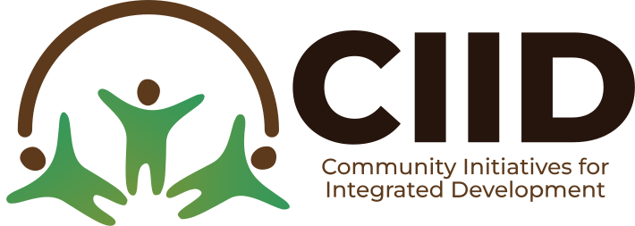

COMMUNAUTÉ INZOZI
Charte d'engagement individuel du membre
Initiatrice du projet : CIID ASBL
Identification du membre
Nom et prénom :
N° ID : INZOZI-
Tél :
Email :
« Ensemble pour bâtir un patrimoine durable au service des générations présentes et futures »
La Communauté INZOZI est un projet communautaire initié par CIID ASBL (Community Initiatives for Integrated Development), agréée par l'O.M. n° 530/1229 du 04/09/2018, une organisation engagée dans la promotion du développement intégré, de la solidarité, de l'autonomisation économique et du bien-être des communautés.
Créée en 2018 dans le but de mobiliser les citoyens autour d'une vision commune de développement durable, la Communauté INZOZI œuvre à la mise en place de solutions collectives dans les domaines de l'éducation, de la santé, de l'entrepreneuriat, de l'emploi, de l'inclusion financière et de tout autre secteur contribuant à l'amélioration des conditions de vie de ses membres.
En adhérant à la Communauté INZOZI, je reconnais que je rejoins une initiative portée par CIID ASBL, fondée sur les valeurs de solidarité, de discipline, de responsabilité, de transparence et d'engagement collectif.
Je comprends que la réussite de cette communauté dépend de l'implication de chacun de ses membres, du respect des règles établies et de la poursuite d'une vision commune orientée vers des solutions durables aux défis économiques et sociaux.
Par la présente Charte, je prends un engagement moral, civique et communautaire à contribuer activement au développement de la Communauté INZOZI et à la réalisation de sa mission.
Article 1 — Mon adhésion
En devenant membre de la Communauté INZOZI, je déclare que :
- J'ai pris connaissance de la vision, de la mission et des objectifs de la communauté.
- J'adhère volontairement à un projet communautaire, économique, social et apolitique.
- Je comprends que le développement de la communauté exige de la patience, de la discipline, de la solidarité et une vision à long terme.
- Je m'engage à respecter toutes les dispositions de la présente Charte ainsi que les décisions prises conformément aux textes internes.
Article 2 — Mes engagements
Je m'engage à :
- Respecter les valeurs d'intégrité, d'honnêteté, de discipline, de solidarité, de respect et de responsabilité.
- Honorer régulièrement mes obligations financières conformément aux décisions des organes dirigeants.
- Reconnaître que mes contributions représentent des droits d'adhésion à la communauté et ne constituent ni une épargne personnelle ni un investissement donnant droit à un remboursement automatique ou à des dividendes individuels.
- Préserver l'image, l'unité et la crédibilité de la Communauté INZOZI.
- Ne diffuser aucune information mensongère, trompeuse ou susceptible de porter atteinte à la communauté.
- Participer, selon mes possibilités, aux réunions, formations, consultations et activités communautaires.
- Soutenir les actions de mobilisation et promouvoir la vision de la Communauté INZOZI avec loyauté et responsabilité.
Article 3 — Ma carte de membre et mon QR code
Après validation de mon adhésion :
- Je bénéficie d'un identifiant personnel matérialisé par un QR Code.
- Ce QR Code constitue la preuve officielle de mon appartenance à la Communauté INZOZI.
- Il me permet d'accéder aux services et avantages développés par la communauté.
- Mon QR Code est personnel, confidentiel et incessible sauf autorisation expresse des organes compétents.
- Toute utilisation frauduleuse peut entraîner des sanctions prévues par les textes internes.
Article 4 — Mes droits et les services communautaires
Je reconnais que :
- Les services de la Communauté INZOZI sont exclusivement destinés à ses membres.
- Nul ne peut bénéficier des services de la communauté sans avoir préalablement adhéré.
-
La Communauté INZOZI développe progressivement des services destinés notamment à :
- l'éducation des enfants des membres ;
- l'accès aux soins de santé ;
- la création d'emplois ;
- le développement des activités économiques ;
- l'accompagnement des entrepreneurs ;
- toute autre initiative approuvée par les organes dirigeants.
- La qualité de membre me donne un accès prioritaire aux opportunités développées par la communauté, conformément aux critères établis.
Article 5 — Les limites des services
Je comprends que :
- La Communauté INZOZI ne peut pas résoudre immédiatement tous les problèmes de chacun de ses membres.
- Son développement repose sur une stratégie progressive privilégiant des résultats durables à moyen et à long terme.
- Les ressources disponibles peuvent limiter temporairement le nombre de bénéficiaires de certains services.
- L'égalité des chances ne signifie pas que tous bénéficieront simultanément des mêmes services.
Article 6 — Critères de sélection
Je reconnais que certains services nécessitent une sélection. À titre d'exemple :
1. Recrutement
Lorsque la Communauté INZOZI organise un recrutement, les candidats sont prioritairement issus de ses membres. Toutefois, seuls ceux qui répondent le mieux aux critères de sélection sont retenus. Les membres non sélectionnés conservent intégralement leur qualité de membre ainsi que leur droit de bénéficier des autres services communautaires.
2. Éducation
Lorsqu'un établissement scolaire de la Communauté INZOZI ne dispose pas d'une capacité suffisante pour accueillir tous les enfants des membres, une sélection est opérée selon des critères transparents et objectifs. Les membres dont les enfants ne sont pas retenus continuent à bénéficier des autres avantages de la communauté.
Article 7 — Retrait d'un membre
En cas de retrait volontaire :
- Je renonce définitivement à toute demande de remboursement des contributions déjà versées.
- Je reconnais que ces contributions demeurent acquises à la Communauté INZOZI.
- Si je souhaite quitter la communauté, je peux céder ou vendre mes droits à une autre personne.
- Cette cession est obligatoirement soumise à l'autorisation préalable de l'Organe Supérieur de la Communauté INZOZI.
- Aucun transfert ne peut produire effet sans cette autorisation.
Article 8 — Discipline et règlement des litiges
Je reconnais que :
- Tout manquement à la présente Charte peut entraîner un avertissement, une suspension ou une exclusion.
- Tout différend sera d'abord soumis à une médiation interne avant tout autre recours.
- Je m'engage à respecter les décisions prises conformément aux textes de la Communauté INZOZI.
Engagement du membre
Je soussigné(e) certifie avoir lu, compris et accepté toutes les dispositions de la présente Charte. Je m'engage librement à respecter chacune de ses dispositions et à contribuer activement au développement de la Communauté INZOZI.
Nom et prénom
Numéro de membre
INZOZI-
Date
Signature